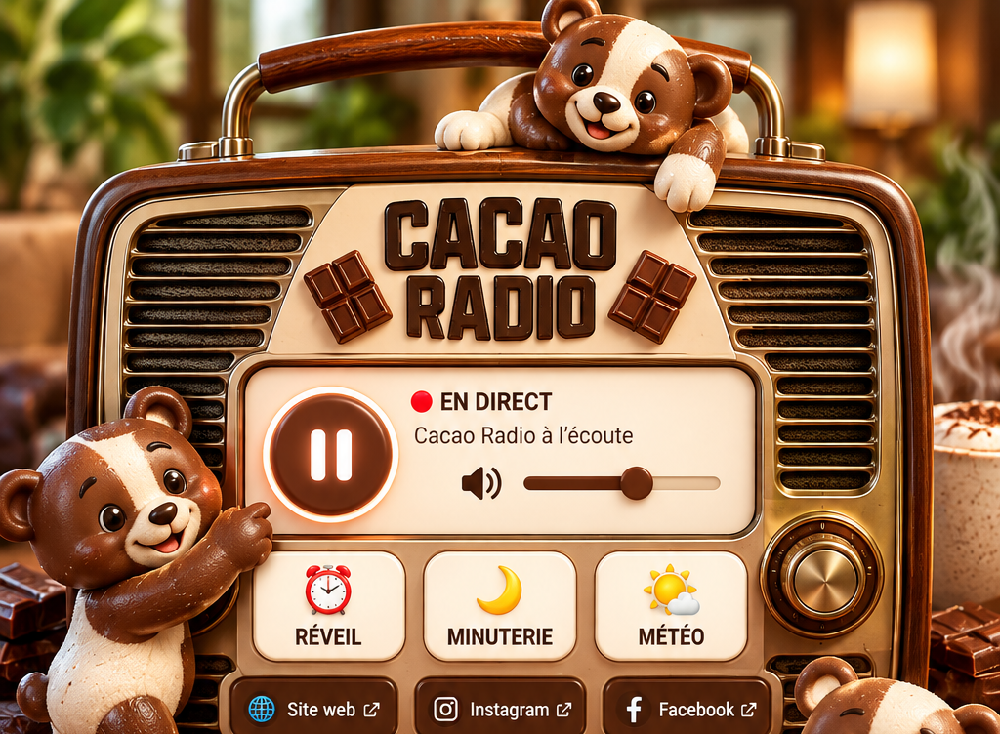

PRÊT À ÉCOUTER
🔊
Aucun réveil programmé
Aucune minuterie active
Entrez une ville pour afficher la météo.
📲 Installer Cacao Radio
🍎 Sur iPhone :Ouvrez cette page dans Safari → Partager → Ajouter à l’écran d’accueil.
🤖 Sur Android :
Ouvrez cette page dans Chrome → menu ⋮ → Installer l’application.
⏰ Important pour le réveil
Pour que le réveil Cacao Radio fonctionne, laissez l’application ouverte en arrière-plan. Si votre téléphone ferme ou suspend complètement l’application, le démarrage automatique de la radio ne peut pas être garanti.
Pour que le réveil Cacao Radio fonctionne, laissez l’application ouverte en arrière-plan. Si votre téléphone ferme ou suspend complètement l’application, le démarrage automatique de la radio ne peut pas être garanti.